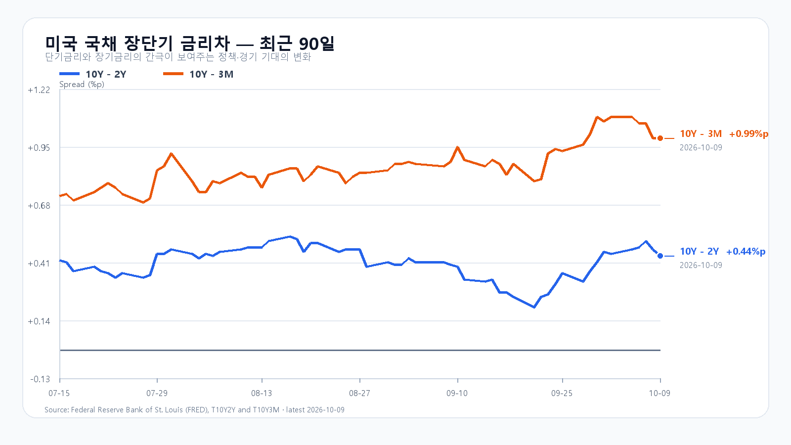
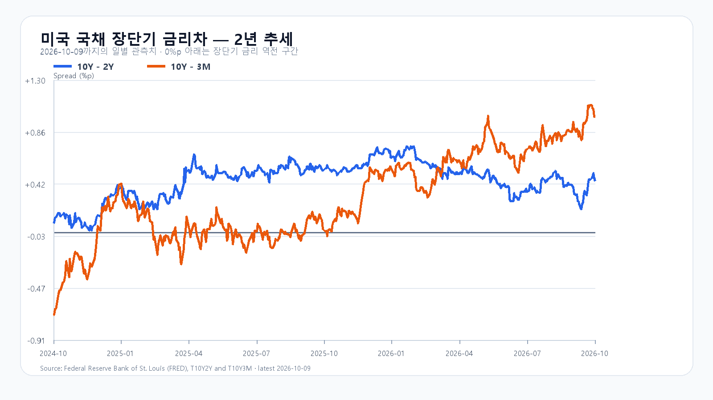

반도체 매도가 미국과 서울을 이틀째 같은 방향으로 밀었다. 10월 12일 SOXX는 2.60%, SMH는 2.05% 하락했고 Micron은 3.88%, AMD는 2.28%, Nvidia는 1.29% 내렸다. QQQ는 0.70% 하락했다.
국내에서는 KOSPI가 6,384.24로 3.65% 하락했고 KODEX 레버리지는 93,620원으로 7.67% 밀렸다. 삼성전자와 SK하이닉스도 각각 4.20%, 4.52% 하락했다. 장전 NXT는 삼성전자 243,000원(-3.0%), SK하이닉스 1,552,000원(-3.3%)으로 전일 종가보다 낮다.
메모리 현물은 주가와 다른 속도로 움직인다. TrendForce의 10월 12일 DDR5 16Gb 현물 평균은 59.433달러로 직전 세션보다 0.90% 올랐고, DDR4 16Gb는 83.886달러로 0.29% 상승했다. 서버 DRAM과 HBM의 중기 공급 제약은 남아 있지만, 오늘 가격은 미국 반도체 매도와 국내 수급이 먼저 결정한다.
기본 시나리오는 KOSPI 6,250~6,450, 확률 45%다. 6,450을 회복하고 외국인 현물과 프로그램이 함께 순매수로 바뀌면 6,450 초과~6,600의 강세 범위(15%)를 본다. 6,250 아래에서 두 수급이 함께 매도로 기울면 6,100~6,250 미만의 약세 범위(40%)가 열린다.
KODEX 레버리지는 92,965원을 1차 지지, 93,620원을 반등 기준, 100,130원을 저항으로 둔다. 대응 점수는 공격 10, 관망 45, 방어 45다.
| 종가 시나리오 | 범위·확률 | 15시 20분 확인 조건 | 전환 신호 |
|---|---|---|---|
| 강세 | 6,450 초과~6,600 · 15% | 6,450 상회 · 외국인·프로그램 동반 순매수 | 6,450 아래 재진입 |
| 기본 | 6,250~6,450 · 45% | 6,250 이상 · 외국인 순매도 8천억원 미만 | 범위 이탈 |
| 약세 | 6,100~6,250 미만 · 40% | 6,250 미만 · 외국인·프로그램 동반 순매도 | 6,250 회복 |

